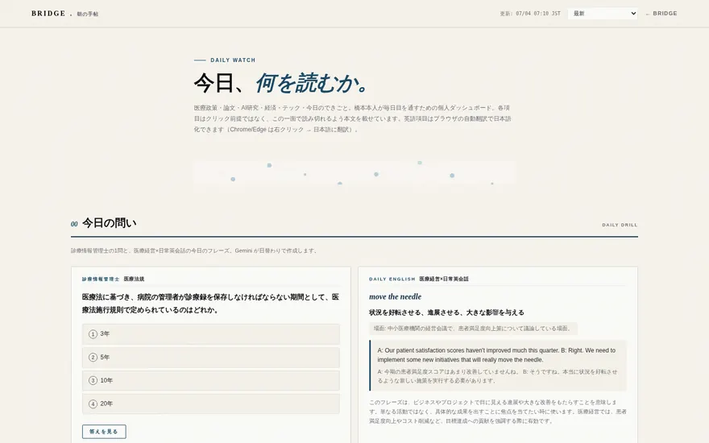
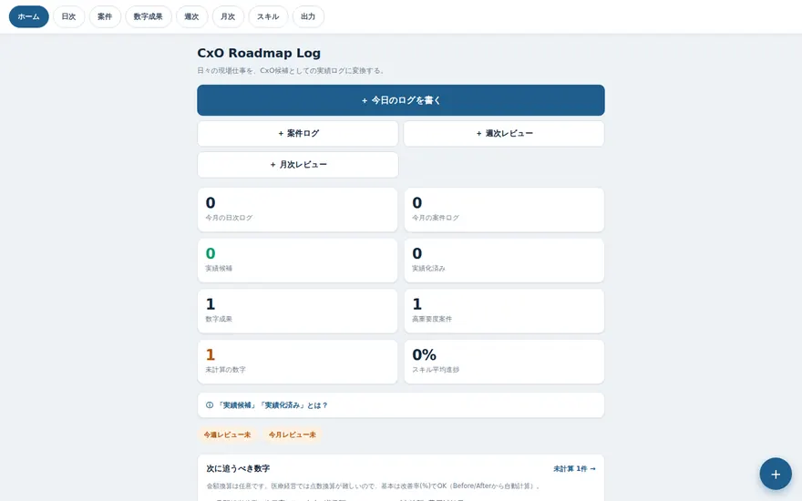
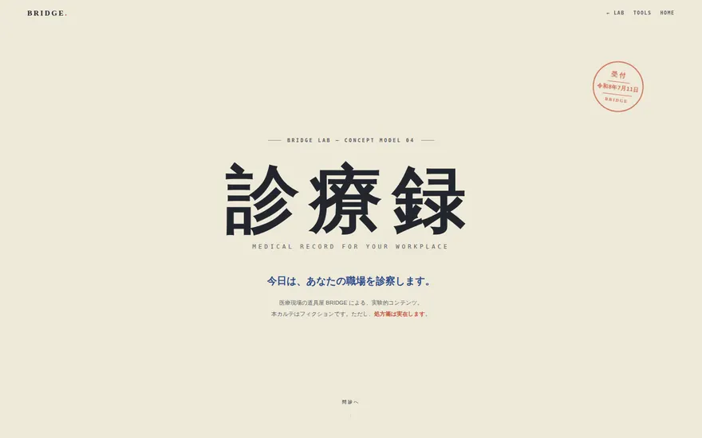
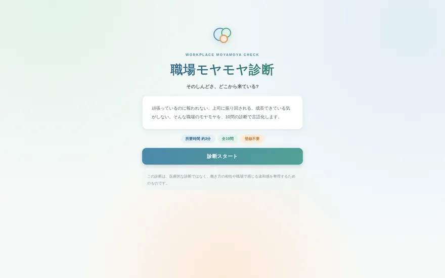

Articles — 記事
タグで、興味のあるところから
このタグの記事はまだありません。noteには他の記事もあります。
Laboratory — 実験室
道具になる前の実験たち
自分のために作った内製ツールと、実験的な制作物。いま動いているものも、手が止まっているものも、そのまま置いています。ここから次のプロダクトが生まれます。

Paused朝の手帖
政治経済・医療政策・論文・テックを一画面に集めた内製ダッシュボード。自動更新の仕組みを置けないまま、2026-07-04で更新が止まっています。画面はそのまま残してあります。
見てみる →
LogCxO Roadmap Log
日々の現場仕事や数字の成果を、実績の言葉に変換する個人用のアプリ。記録は2026-07-04で止まったままです。再開したら、また書きます。
見てみる →
ConceptKARTE
職場のしんどさをSOAP形式で書き起こす、診察型コンセプトページ。
見てみる →
DiagnosisMoyamoya Check
職場の“なんとなくしんどい”を10問で言語化する診断。
見てみる →